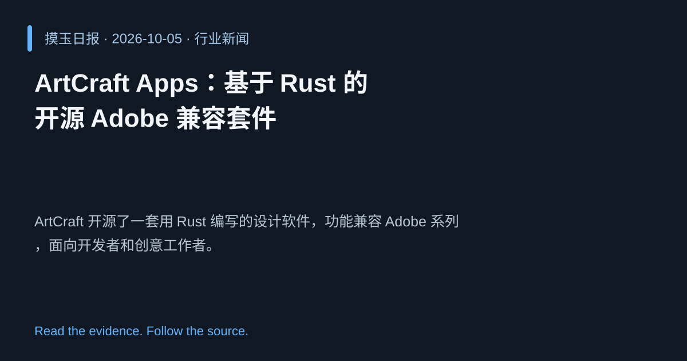

2026-10-05 · Asia/Shanghai · 行业新闻 · #2
ArtCraft Apps：基于 Rust 的开源 Adobe 兼容套件
ArtCraft Apps – open-source Adobe compatible suite written in Rust
ArtCraft 开源了一套用 Rust 编写的设计软件，功能兼容 Adobe 系列，面向开发者和创意工作者。
为什么值得关注
提供高性能、内存安全的替代方案，推动设计软件生态多样化。
- 使用 Rust 实现安全且高效的图形渲染。
- 与 Adobe 文件格式兼容，降低迁移成本。
- 全套开源，鼓励社区贡献与定制。

热度 51.2 / 100；排名与评分保留该期记录。